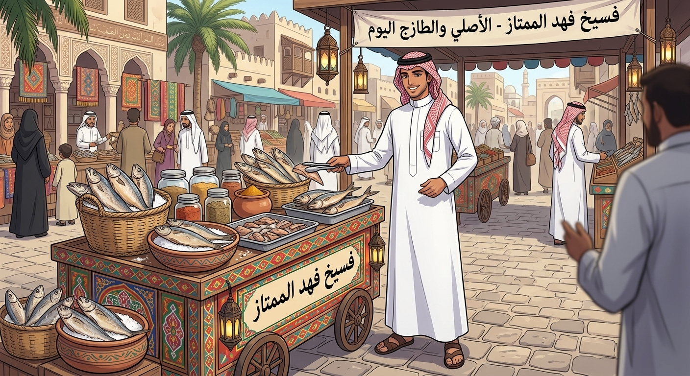
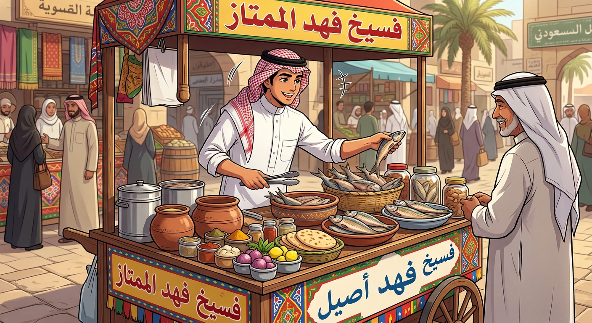
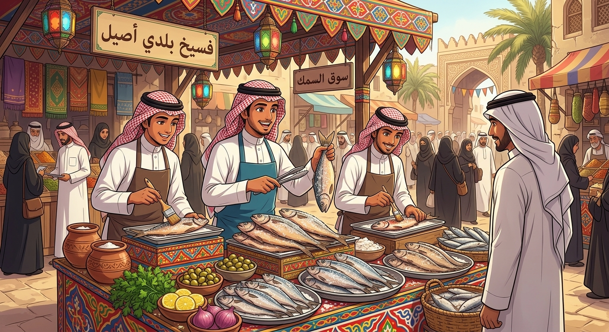
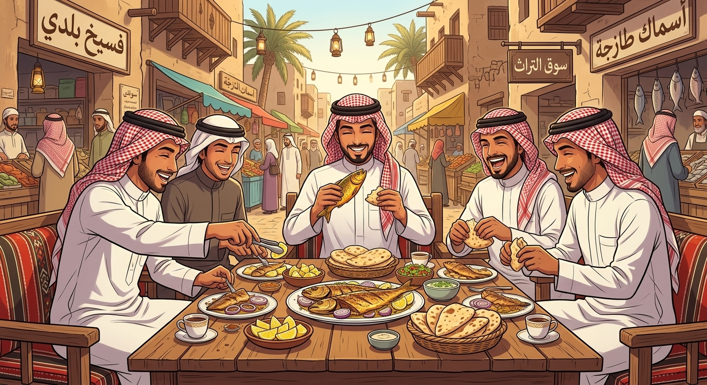
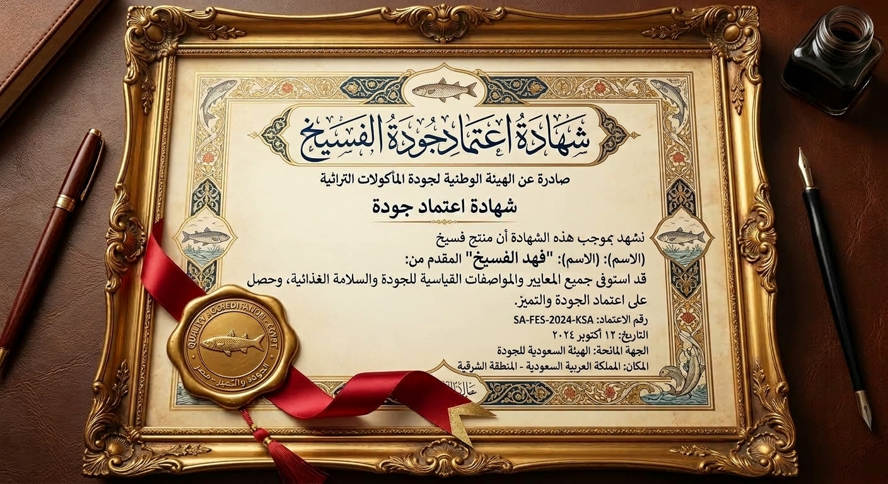

الملف التعريفي: فهد الفسيخ

- شاب سعودي من أبناء المنطقة الشرقية، شغوف بالبحر وخيرات الخليج. قررت أخذ الفسيخ والتراث البحري إلى مستوى جديد تماماً تجمع بين الأصالة الشعبية والجمال الحساوي والنظافة العالية.
- نختص في إعداد وتمليح أجود أنواع سمك البوري والطبخ البحري بطريقة احترافية تضمن لك طعماً يعمّر الرأس وبدون زفارة، مع الحفاظ على أعلى معايير التعقيم والجودة من البحر للمائدة مباشرة.
نبذة عامة

- خبير ومحب للتراث البحري، مكرس لتقديم أفضل تجربة فسيخ وسمك طازج، مع الحفاظ على الأصالة والذوق الرفيع.
الخبرة في المأكولات البحرية

- متخصص في تمليح وإعداد الفسيخ التقليدي بأعلى معايير الجودة والنظافة (2018 - حتى الآن).
- خبير في اختيار أنواع السمك الطازج الأنسب للتمليح والفسخ.
- إدارة وضمان جودة سلسلة التوريد من الصياد إلى المائدة.
المهارات التراثية والولائم

- تقييم جودة الفسيخ بالنظر والرائحة: ⭐️⭐️⭐️⭐️⭐️
- فنون تقديم الفسيخ وتنسيق الولائم: ⭐️⭐️⭐️⭐️⭐️
- مهارات طهي وتتبيل السمك المقلي والمشوي: ⭐️⭐️⭐️⭐️
الشهادات والاعتمادات

- شهادة "خبير الفسيخ المعتمد" — معهد تراث المأكولات البحرية السعودي
تواصل واستكشف